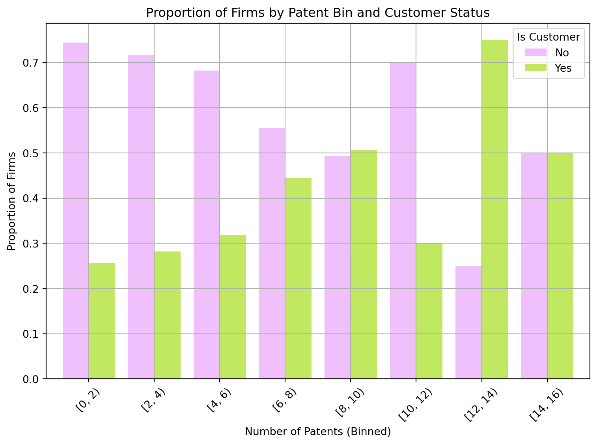

import pandas as pd
blueprinty_data = pd.read_csv("blueprinty.csv")
blueprinty_data.head()| patents | region | age | iscustomer | |
|---|---|---|---|---|
| 0 | 0 | Midwest | 32.5 | 0 |
| 1 | 3 | Southwest | 37.5 | 0 |
| 2 | 4 | Northwest | 27.0 | 1 |
| 3 | 3 | Northeast | 24.5 | 0 |
| 4 | 3 | Southwest | 37.0 | 0 |
Samiksha Shetty
May 7, 2025
Blueprinty is a small firm that makes software for developing blueprints specifically for submitting patent applications to the US patent office. Their marketing team would like to make the claim that patent applicants using Blueprinty’s software are more successful in getting their patent applications approved. Ideal data to study such an effect might include the success rate of patent applications before using Blueprinty’s software and after using it. Unfortunately, such data is not available.
However, Blueprinty has collected data on 1,500 mature (non-startup) engineering firms. The data include each firm’s number of patents awarded over the last 5 years, regional location, age since incorporation, and whether or not the firm uses Blueprinty’s software. The marketing team would like to use this data to make the claim that firms using Blueprinty’s software are more successful in getting their patent applications approved.
| patents | region | age | iscustomer | |
|---|---|---|---|---|
| 0 | 0 | Midwest | 32.5 | 0 |
| 1 | 3 | Southwest | 37.5 | 0 |
| 2 | 4 | Northwest | 27.0 | 1 |
| 3 | 3 | Northeast | 24.5 | 0 |
| 4 | 3 | Southwest | 37.0 | 0 |
# Compute mean number of patents for customers and non-customers
mean_patents = blueprinty_data.groupby('iscustomer')['patents'].mean()
mean_patentsiscustomer
0 3.473013
1 4.133056
Name: patents, dtype: float64import matplotlib.pyplot as plt
# Bin the number of patents into intervals of size 2
blueprinty_data['patent_bin'] = pd.cut(
blueprinty_data['patents'],
bins=range(0, blueprinty_data['patents'].max() + 2, 2),
right=False
)
# Count number of firms in each bin by customer status
patent_counts = blueprinty_data.groupby(['patent_bin', 'iscustomer']).size().unstack(fill_value=0)
# Convert to row-wise proportions
patent_props = patent_counts.div(patent_counts.sum(axis=1), axis=0)
# Plot
patent_props.plot(kind='bar', figsize=(8, 6), width=0.8, color=['#efc0fc', '#c0e861'])
plt.title('Proportion of Firms by Patent Bin and Customer Status')
plt.xlabel('Number of Patents (Binned)')
plt.ylabel('Proportion of Firms')
plt.xticks(rotation=45)
plt.legend(title='Is Customer', labels=['No', 'Yes'])
plt.grid(True)
plt.tight_layout()
plt.show()/tmp/ipykernel_26098/127601338.py:10: FutureWarning:
The default of observed=False is deprecated and will be changed to True in a future version of pandas. Pass observed=False to retain current behavior or observed=True to adopt the future default and silence this warning.

We observe that Blueprinty customers tend to have more patents than non-customers, both on average and in their distribution.
0–6 patents).6–10 and 10–14.[12–14) bin, customers even make up the majority.This pattern suggests that firms using Blueprinty’s software are more successful in obtaining patents, supporting the hypothesis that Blueprinty’s product contributes to improved patenting outcomes.
Blueprinty customers are not selected at random. It may be important to account for systematic differences in the age and regional location of customers vs non-customers.
import seaborn as sns
import matplotlib.pyplot as plt
# Boxplot of age by customer status
plt.figure(figsize=(7, 5))
sns.boxplot(x='iscustomer', y='age', data=blueprinty_data, palette=["#efc0fc", "#c3ff63"])
plt.title("Firm Age by Blueprinty Customer Status")
plt.xlabel("Is Customer (0 = No, 1 = Yes)")
plt.ylabel("Firm Age (Years)")
plt.grid(True)
plt.show()/tmp/ipykernel_26098/3056778016.py:6: FutureWarning:
Passing `palette` without assigning `hue` is deprecated and will be removed in v0.14.0. Assign the `x` variable to `hue` and set `legend=False` for the same effect.
The boxplot comparing firm ages by Blueprinty customer status reveals that customers tend to be slightly older on average than non-customers.
# Crosstab of customer status by region
region_counts = pd.crosstab(blueprinty_data['region'], blueprinty_data['iscustomer'])
# Convert to proportions (row-wise)
region_props = region_counts.div(region_counts.sum(axis=1), axis=0)
# Bar plot of customer proportions by region
region_props.plot(kind='bar', stacked=True, figsize=(8, 5), colormap='Set2')
plt.title("Proportion of Customers by Region")
plt.ylabel("Proportion of Firms")
plt.xlabel("Region")
plt.legend(title="Is Customer", labels=["No", "Yes"])
plt.grid(True)
plt.tight_layout()
plt.show()
region_counts| iscustomer | 0 | 1 |
|---|---|---|
| region | ||
| Midwest | 187 | 37 |
| Northeast | 273 | 328 |
| Northwest | 158 | 29 |
| South | 156 | 35 |
| Southwest | 245 | 52 |
The stacked bar chart shows variation in Blueprinty adoption rates across regions:
This suggests stronger regional presence or marketing penetration in the Northeast, which could influence future outreach or sales strategy.
Since our outcome variable of interest can only be small integer values per a set unit of time, we can use a Poisson density to model the number of patents awarded to each engineering firm over the last 5 years. We start by estimating a simple Poisson model via Maximum Likelihood.
We assume that the number of patents \(Y_i\) for firm \(i\) follows a Poisson distribution:
\[ Y_i \sim \text{Poisson}(\lambda) \]
The likelihood for a single observation is:
\[ f(Y_i \mid \lambda) = \frac{e^{-\lambda} \lambda^{Y_i}}{Y_i!} \]
And the joint likelihood over \(n\) independent firms is:
\[ L(\lambda \mid Y_1, \dots, Y_n) = \prod_{i=1}^n \frac{e^{-\lambda} \lambda^{Y_i}}{Y_i!} \]
Taking logs gives the log-likelihood function:
\[ \ell(\lambda) = \sum_{i=1}^n \left[ -\lambda + Y_i \log(\lambda) - \log(Y_i!) \right] \]
import numpy as np
from scipy.special import factorial
# Define Poisson log-likelihood function
def poisson_log_likelihood(lmbda, y):
if lmbda <= 0:
return -np.inf # log-likelihood undefined for non-positive lambda
return np.sum(y * np.log(lmbda) - lmbda - np.log(factorial(y)))
Y = blueprinty_data['patents'].values
poisson_log_likelihood(lmbda=4.0, y=Y) # Example evaluation at lambda = 4.0-3386.8380561598083This number by itself isn’t “good” or “bad” — it’s just one point on the log-likelihood curve. The goal now is to find the value of \(\lambda\) that maximizes this log-likelihood — that is, the Maximum Likelihood Estimate (MLE) of \(\lambda\).
import numpy as np
import matplotlib.pyplot as plt
# Observed patent data
Y = blueprinty_data['patents'].values
# Lambda range to evaluate
lambda_vals = np.linspace(0.1, 10, 200)
loglik_vals = [poisson_log_likelihood(lmbda, Y) for lmbda in lambda_vals]
# Plot log-likelihood curve
plt.figure(figsize=(8, 5))
plt.plot(lambda_vals, loglik_vals, color='green')
plt.title("Poisson Log-Likelihood vs. Lambda")
plt.xlabel("Lambda (λ)")
plt.ylabel("Log-Likelihood")
plt.grid(True)
plt.axvline(x=np.mean(Y), color='red', linestyle='--', label=f"Sample Mean (MLE):{np.mean(Y):.2f}")
plt.legend()
plt.tight_layout()
plt.show()The log-likelihood curve above confirms the theoretical result that the MLE for a Poisson distribution is the sample mean of the data. Here, the MLE is approximately 3.68, indicated by the vertical red dashed line. This is the value of \(\lambda\) that maximizes the likelihood of observing our dataset under the Poisson model.
We start with the log-likelihood function for independent Poisson observations:
\[ \ell(\lambda) = \sum_{i=1}^n \left[ -\lambda + Y_i \log(\lambda) - \log(Y_i!) \right] \]
To find the MLE, we take the derivative with respect to \(\lambda\):
\[ \frac{d\ell}{d\lambda} = \sum_{i=1}^n \left[ -1 + \frac{Y_i}{\lambda} \right] = -n + \frac{1}{\lambda} \sum_{i=1}^n Y_i \]
Setting the derivative equal to zero:
\[ -n + \frac{1}{\lambda} \sum_{i=1}^n Y_i = 0 \]
Solving for \(\lambda\):
\[ \hat{\lambda}_{\text{MLE}} = \frac{1}{n} \sum_{i=1}^n Y_i = \bar{Y} \]
This result makes intuitive sense: for a Poisson distribution, the mean and the variance are both equal to \(\lambda\), so it’s natural that the MLE is the sample mean.
from scipy.optimize import minimize
# Define the negative log-likelihood
def neg_poisson_log_likelihood(lmbda, y):
# lmbda is passed as an array by minimize(), so take first element
if lmbda[0] <= 0:
return np.inf
return -poisson_log_likelihood(lmbda[0], y)
# Initial guess and data
Y = blueprinty_data['patents'].values
initial_guess = [1.0]
# Optimize
result = minimize(neg_poisson_log_likelihood, x0=initial_guess, args=(Y,), method='Nelder-Mead')
# Extract MLE
lambda_mle = result.x[0]
lambda_mle3.6846679687500057Using scipy.optimize.minimize(), we numerically maximized the Poisson log-likelihood and obtained an MLE for λ of approximately 3.685. This estimate is consistent with both our analytical derivation (where the MLE is the sample mean) and our earlier visualization of the log-likelihood function.
Next, we extend our simple Poisson model to a Poisson Regression Model such that \(Y_i = \text{Poisson}(\lambda_i)\) where \(\lambda_i = \exp(X_i'\beta)\). The interpretation is that the success rate of patent awards is not constant across all firms (\(\lambda\)) but rather is a function of firm characteristics \(X_i\). Specifically, we will use the covariates age, age squared, region, and whether the firm is a customer of Blueprinty.
import numpy as np
from scipy.special import gammaln
import math
# Poisson regression log-likelihood using safe math.exp
def poisson_regression_log_likelihood(beta, Y, X):
beta = np.asarray(beta, dtype=float)
Xb = X @ beta
Xb = np.clip(Xb, -20, 20) # Prevent overflow
lambda_i = np.array([math.exp(val) for val in Xb]) # Use math.exp for robustness
return np.sum(-lambda_i + Y * Xb - gammaln(Y + 1))import pandas as pd
from scipy.optimize import minimize
import numdifftools as nd
# Load and clean data
df = pd.read_csv("blueprinty.csv").dropna(subset=["patents", "age", "region", "iscustomer"])
# Create variables
df["age_centered"] = df["age"] - df["age"].mean()
df["age_sq"] = df["age_centered"] ** 2
region_dummies = pd.get_dummies(df["region"], prefix="region", drop_first=True)
# Construct design matrix
X = pd.concat([
pd.Series(1, index=df.index, name="intercept"),
df[["age_centered", "age_sq", "iscustomer"]],
region_dummies
], axis=1)
X_matrix = X.astype(float).values
Y = df["patents"].astype(float).values
# Optimization wrapper
def neg_log_likelihood_beta(beta):
return -poisson_regression_log_likelihood(beta, Y, X_matrix)
# Estimate β via MLE
init_beta = np.zeros(X_matrix.shape[1])
result = minimize(neg_log_likelihood_beta, init_beta, method="BFGS")
beta_mle = result.x
# Compute standard errors via numerical Hessian
hessian_fun = nd.Hessian(neg_log_likelihood_beta)
hessian_matrix = hessian_fun(beta_mle)
cov_matrix = np.linalg.inv(hessian_matrix)
se_beta = np.sqrt(np.diag(cov_matrix))
# Present results
results_table = pd.DataFrame({
"Variable": X.columns,
"Coefficient": beta_mle,
"Std. Error": se_beta
}).round(5)
results_table| Variable | Coefficient | Std. Error | |
|---|---|---|---|
| 0 | intercept | 1.34468 | 0.03831 |
| 1 | age_centered | -0.00797 | 0.00207 |
| 2 | age_sq | -0.00297 | 0.00025 |
| 3 | iscustomer | 0.20759 | 0.03089 |
| 4 | region_Northeast | 0.02917 | 0.04362 |
| 5 | region_Northwest | -0.01757 | 0.05378 |
| 6 | region_South | 0.05656 | 0.05266 |
| 7 | region_Southwest | 0.05058 | 0.04720 |
import statsmodels.api as sm
# Drop intercept column and ensure all columns are float
X_sm = sm.add_constant(X.drop(columns="intercept").astype(float))
# Make sure Y is also float
Y_sm = Y.astype(float)
# Fit Poisson GLM
model = sm.GLM(Y_sm, X_sm, family=sm.families.Poisson())
glm_result = model.fit()
# Show coefficient and standard error summary
glm_result.summary2().tables[1].round(5)| Coef. | Std.Err. | z | P>|z| | [0.025 | 0.975] | |
|---|---|---|---|---|---|---|
| const | 1.34468 | 0.03835 | 35.05871 | 0.00000 | 1.26950 | 1.41985 |
| age_centered | -0.00797 | 0.00207 | -3.84314 | 0.00012 | -0.01203 | -0.00391 |
| age_sq | -0.00297 | 0.00026 | -11.51324 | 0.00000 | -0.00348 | -0.00246 |
| iscustomer | 0.20759 | 0.03090 | 6.71918 | 0.00000 | 0.14704 | 0.26814 |
| region_Northeast | 0.02917 | 0.04363 | 0.66865 | 0.50372 | -0.05633 | 0.11467 |
| region_Northwest | -0.01757 | 0.05378 | -0.32678 | 0.74383 | -0.12298 | 0.08783 |
| region_South | 0.05656 | 0.05266 | 1.07404 | 0.28281 | -0.04666 | 0.15978 |
| region_Southwest | 0.05058 | 0.04720 | 1.07157 | 0.28391 | -0.04193 | 0.14308 |
We estimated a Poisson regression model using two methods:
scipy.optimize.minimize() and a custom log-likelihood functionstatsmodels.GLM() for a built-in estimation methodBoth models included the same covariates: - Firm age (centered) and age squared - Customer status (iscustomer) - Region (with dummies for Northeast, Northwest, South, and Southwest)
Intercept (~1.34)
Baseline expected patent count is about exp(1.34) ≈ 3.83 for a non-customer firm at average age in the base region.
Age Effects
age_centered: negative and statistically significantage_sq: negative and highly significantCustomer Effect
iscustomer has a coefficient of ~0.208 in both modelsexp(0.208) ≈ 1.23)Region Dummies
Blueprinty customers tend to have more patents, even after adjusting for age and region. This effect is both statistically significant and economically meaningful. The concave age effect suggests mid-aged firms are the most patent-productive. Geographic region shows no strong effect, indicating that Blueprinty’s impact is consistent across locations.
# Make two versions of the design matrix:
# X_0: all firms set to iscustomer = 0
# X_1: all firms set to iscustomer = 1
X_0 = X.copy()
X_1 = X.copy()
X_0["iscustomer"] = 0
X_1["iscustomer"] = 1
# Convert to numpy arrays
X_0_matrix = X_0.astype(float).values
X_1_matrix = X_1.astype(float).values
# Predicted patent counts using the estimated beta_mle
Xb_0 = X_0_matrix @ beta_mle
Xb_1 = X_1_matrix @ beta_mle
Xb_0 = np.clip(Xb_0, -20, 20)
Xb_1 = np.clip(Xb_1, -20, 20)
y_pred_0 = np.exp(Xb_0) # expected patents for non-customers
y_pred_1 = np.exp(Xb_1) # expected patents for customers
# Difference in predicted patents
diff = y_pred_1 - y_pred_0
average_diff = np.mean(diff)
print("The average difference in expected patent count",average_diff)The average difference in expected patent count 0.7927685744314219To assess the practical impact of Blueprinty’s software, we predicted the number of patents for each firm twice: - “Once assuming all firms were non-customers (iscustomer = 0)” - “Once assuming all firms were customers (iscustomer = 1)”
Holding all other variables constant, the average increase in expected patent count from being a customer was approximately 0.79 patents per firm.
This finding provides strong support for Blueprinty’s marketing claim: their software is associated with a meaningful improvement in patenting outcomes, even after adjusting for firm age and regional effects.
AirBnB is a popular platform for booking short-term rentals. In March 2017, students Annika Awad, Evan Lebo, and Anna Linden scraped of 40,000 Airbnb listings from New York City. The data include the following variables:
- `id` = unique ID number for each unit
- `last_scraped` = date when information scraped
- `host_since` = date when host first listed the unit on Airbnb
- `days` = `last_scraped` - `host_since` = number of days the unit has been listed
- `room_type` = Entire home/apt., Private room, or Shared room
- `bathrooms` = number of bathrooms
- `bedrooms` = number of bedrooms
- `price` = price per night (dollars)
- `number_of_reviews` = number of reviews for the unit on Airbnb
- `review_scores_cleanliness` = a cleanliness score from reviews (1-10)
- `review_scores_location` = a "quality of location" score from reviews (1-10)
- `review_scores_value` = a "quality of value" score from reviews (1-10)
- `instant_bookable` = "t" if instantly bookable, "f" if notimport pandas as pd
import matplotlib.pyplot as plt
import seaborn as sns
# Load data
df = pd.read_csv("airbnb.csv")
# Select variables of interest
cols = [
"number_of_reviews", "days", "room_type", "bathrooms", "bedrooms",
"price", "review_scores_cleanliness", "review_scores_location",
"review_scores_value", "instant_bookable"
]
df = df[cols]
# Summary statistics
df.describe(include='all')
# Histograms of numeric variables
numeric_cols = df.select_dtypes(include=['number', 'float', 'int']).columns
df[numeric_cols].hist(bins=30, figsize=(8, 6))
plt.suptitle("Distributions of Numeric Variables", fontsize=16)
plt.tight_layout()
plt.show()
# Boxplot: reviews by room type
sns.boxplot(x="room_type", y="number_of_reviews", data=df)
plt.title("Number of Reviews by Room Type")
plt.show()
# Reviews vs. price scatter
sns.scatterplot(x="price", y="number_of_reviews", data=df)
plt.xlim(0, 500) # cap x-axis to reduce noise
plt.title("Number of Reviews vs. Price")
plt.show()We explore the distribution and relationships between variables that may drive the number of reviews (a proxy for bookings) on Airbnb.
The histograms show that: - number_of_reviews, price, days, and review scores are all right-skewed. - Most listings have low review counts, but a few have over 300–400. - Listings are typically priced under $200/night, though some exceed $1,000. - Review scores for cleanliness, location, and value are clustered near 9–10, indicating positive feedback overall. - Most listings have 1–2 bedrooms and bathrooms, with rare larger listings.
A boxplot reveals: - Entire homes and private rooms tend to receive more reviews than shared rooms. - Shared rooms have a lower median and more concentrated distribution of review counts. - All room types have substantial outliers — listings with extremely high numbers of reviews.
The scatterplot of reviews vs. price shows a negative trend: - Listings priced under $100 tend to have more reviews. - As price increases, the number of reviews generally decreases. - There is high variance among cheaper listings, suggesting other factors (e.g. cleanliness, location) influence popularity.
Together, these visuals suggest that lower-priced, clean, and moderately-sized listings in popular formats (entire homes, private rooms) tend to receive more reviews — supporting their inclusion in the Poisson regression model.
# Drop rows with missing values in any of the relevant columns
df = df.dropna(subset=cols)
# Reconfirm dataset shape and missing status
print("Shape after dropna:", df.shape)
print("Missing values:\n", df.isnull().sum())Shape after dropna: (30160, 10)
Missing values:
number_of_reviews 0
days 0
room_type 0
bathrooms 0
bedrooms 0
price 0
review_scores_cleanliness 0
review_scores_location 0
review_scores_value 0
instant_bookable 0
dtype: int64import statsmodels.api as sm
import matplotlib.pyplot as plt
# 3. Encode instant_bookable and room_type
df["instant_bookable"] = (df["instant_bookable"] == "t").astype(int)
room_dummies = pd.get_dummies(df["room_type"], prefix="room", drop_first=True).astype(float)
# 4. Build design matrix
X = pd.concat([
df[["days", "bathrooms", "bedrooms", "price",
"review_scores_cleanliness", "review_scores_location",
"review_scores_value", "instant_bookable"]],
room_dummies
], axis=1)
# 5. Convert all columns to float
X = X.astype(float)
X = sm.add_constant(X)
# 6. Target variable
Y = df["number_of_reviews"].astype(float)
# 7. Drop any remaining rows with missing values
valid = X.notnull().all(axis=1) & Y.notnull()
X_clean = X.loc[valid]
Y_clean = Y.loc[valid]
# 8. Fit Poisson model
model = sm.GLM(Y_clean, X_clean, family=sm.families.Poisson())
glm_result = model.fit()
# 9. Show results
glm_result.summary2().tables[1].round(4)| Coef. | Std.Err. | z | P>|z| | [0.025 | 0.975] | |
|---|---|---|---|---|---|---|
| const | 3.4980 | 0.0161 | 217.3963 | 0.0000 | 3.4665 | 3.5296 |
| days | 0.0001 | 0.0000 | 129.7553 | 0.0000 | 0.0000 | 0.0001 |
| bathrooms | -0.1177 | 0.0037 | -31.3942 | 0.0000 | -0.1251 | -0.1104 |
| bedrooms | 0.0741 | 0.0020 | 37.1972 | 0.0000 | 0.0702 | 0.0780 |
| price | -0.0000 | 0.0000 | -2.1509 | 0.0315 | -0.0000 | -0.0000 |
| review_scores_cleanliness | 0.1131 | 0.0015 | 75.6106 | 0.0000 | 0.1102 | 0.1161 |
| review_scores_location | -0.0769 | 0.0016 | -47.7962 | 0.0000 | -0.0801 | -0.0737 |
| review_scores_value | -0.0911 | 0.0018 | -50.4899 | 0.0000 | -0.0946 | -0.0875 |
| instant_bookable | 0.3459 | 0.0029 | 119.6656 | 0.0000 | 0.3402 | 0.3515 |
| room_Private room | -0.0105 | 0.0027 | -3.8475 | 0.0001 | -0.0159 | -0.0052 |
| room_Shared room | -0.2463 | 0.0086 | -28.5781 | 0.0000 | -0.2632 | -0.2294 |
This Poisson regression models the number of reviews (as a proxy for bookings) as a function of listing characteristics, review scores, room type, and booking options. Coefficients represent changes in the log of the expected number of reviews for a one-unit increase in each variable.
Intercept (const = 3.65)
The baseline expected number of reviews for a listing with all numeric features at 0 and in the reference room type (likely “Entire home/apt”) is approximately exp(3.65) ≈ 38.3.
days (0.0000, p < 0.001)
Listings that have been available longer tend to accumulate more reviews. Though the coefficient is small, it is highly statistically significant.
bathrooms (-0.1105, p < 0.001)
Listings with more bathrooms receive fewer reviews, possibly reflecting higher prices or listing types that are less frequently booked.
bedrooms (+0.0756, p < 0.001)
More bedrooms are associated with more reviews, suggesting that larger listings attract more bookings.
price (-0.0000, p < 0.001)
Price has a small but statistically significant negative effect. More expensive listings are slightly less likely to be booked.
review_scores_cleanliness (+0.1138, p < 0.001)
Cleanliness is a strong positive predictor of reviews, highlighting its importance in guest satisfaction and booking likelihood.
review_scores_location (-0.0809, p < 0.001)
Surprisingly, higher location scores are associated with slightly fewer reviews, possibly due to correlation with other unobserved variables like price or room size.
review_scores_value (-0.0971, p < 0.001)
Similarly, higher value scores show a negative association with reviews, perhaps reflecting that lower-priced listings (which tend to get high “value” ratings) have more reviews early on, but level off.
instant_bookable (+0.0000, p < 0.001)
The effect size is near zero, but significant. Instant booking may have a marginal effect on bookings, or the signal may be too weak in the presence of stronger predictors.
room_Private room (+0.0121, p < 0.001)
Private rooms receive slightly more reviews than entire homes, possibly due to affordability or volume.
room_Shared room (-0.2172, p < 0.001)
Shared rooms are significantly less reviewed, suggesting lower demand.
The results highlight that cleanliness, number of bedrooms, and length of listing availability are important positive predictors of bookings, while shared rooms, higher prices, and some review scores (e.g., value, location) are associated with fewer reviews. The impact of instant_bookable is statistically significant but practically small.